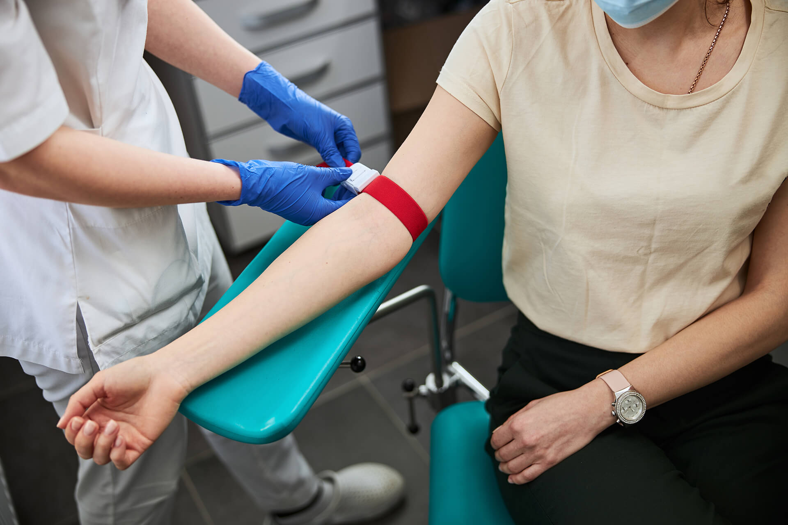

بدأ حلمنا حين كنا طلابا بالفرقة الخامسة بكلية طب عين شمس أواخر عام 1999 حين شعرنا بمعاناة الأطفال المصابين بأمراض الدم المزمنة والأورام وما يتعرضون له من مضاعفات بسبب النقص فى كميات الدم المطلوبة , فقررنا أن نتحمل مسئولية سد هذا العجز بالتبرع المنتظم بالدم وكذلك دعوة الزملاء وتشجيعهم على التبرع ومداومة تذكيرهم بموعد تبرعهم كل 6 شهور .

وفى فبراير 2000 كانت البداية لـ (مشروع التبرع المنتظم بالدم) الذى عرف باسم (شريان العطاء) حيث تم تأسيس المشروع وانشاء أول قاعدة بيانات للمتبرعين المنتظمين بالدم فى مصر ضمت حينها 300 متبرع منتظم .
وتطور الحلم حين أدركنا أن أصل المشكلة هو النقص الشديد فى الوعى العام بمشكلة الدم وغياب شعور المجتمع بالمسئولية الجماعية عن توافر الدم وكذلك وهو الأمر الأخطر فقدان الثقة فى كفاءة وأمانة الجهات المنوطة بجمع الدم وتوزيعه وتعودنا أن نسمع من الناس تعليقات مثل ( أنا خايف اتبرع , ممكن أصاب بعدوى, أنا خايف الدم ده يباع ,خايف صحتى تتأثر ) .
وحينها أدركنا أن دورنا الحقيقى يجب أن يكون تغيير ثقافة المجتمع حول التبرع بالدم وتعديل الممارسات الخاطئة التى تمارسها بعض بنوك الدم – تحت ضغط النقص الحاد فى الدم – من أجل جمع أكبر عدد من وحدات الدم على حساب أمان وسلامة المتبرع وكذلك أمان وحدة الدم.
وبدأ حلم جديد كان ببساطة أن نحول السؤال الذى نواجهه فى كل مكان وهو (أتبرع بالدم ليه؟) إلى سؤال آخر يسأله كل فرد لنفسه فلا يجد ردا هو(ليه ماتبرعشى بالدم؟) .
وازداد الحلم قوة حين تدعمت الفكرة بأسانيد علمية من جهات مرجعية خلال شهرين وفى أبريل 2000 كان شعار يوم الصحة العالمى (الدم الآمن مسئولية كل فرد منا). وقد أكدت النشرات الصادرة بهذه المناسبة على أن: (يعتبر غياب نظام التبرع على أساس مجتمعى هو أهم المشاكل التى تواجهها أغلب دول أقليم شرق المتوسط). كما لفتت النظر إلى أنه: (هناك أدلة قوية على أن أكثر الأجراءات فعالية لضمان سلامة الدم هوأن يتم جمع الدم من فئة محددة جيدا من المتبرعين الذي لا يتلقون أى مقابلً والذين يتبرعون بدمهم بانتظام).
خلال 8 شهور وفى نوفمبر 2000 تم افتتاح المركز القومى لنقل الدم مما أعطي فكرة المشروع دعما من مؤسسة حكومية حديثة تحاول الوصول بمستوى خدمات نقل الدم بمصر إلى المستوى العالمي فتم التعاون مع المركز في تنظيم الحملات وورش العمل و برامج التدريب لمتطوعى المشروع وتم توسيع قاعدة بيانات المتبرعين المسجلين في المشروع كما تم البدء في نشر مفاهيم خدمات نقل الدم حديثة مثل التبرع بالمشتقات (aphresis donation) وفصائل الدم التفصيلية (Phenotyping) .وقدم المشروع 20% من الوحدات التى جمعها المركز القومى لنقل الدم فى عامه الأول.
وحين تخرجنا من كلية طب عين شمس 2003 رفضنا أن ينتهى الحلم بل قررنا أن نعيش لهذه القضية من أجل أن يصل الدم لكل من يحتاجه وأصررنا أن يكبر الحلم ليشمل كل مريض فى مصر. وتم تسجيل جمعية مصر شريان العطاء فى 21-6-2004 كأول جمعية أهلية مصرية تهدف ضمن أهدافها الرئيسية الى توفير الدم الآمن بجانب بعض الأنشطة الاجتماعية الاخرى (رعاية مرضى الاورام – التكافل الطبى). الآن ندعوكم للمشاركة معنا نرجوكم أن تشاركونا الحلم حتى يصبح حلم كل مصرى وعربى.